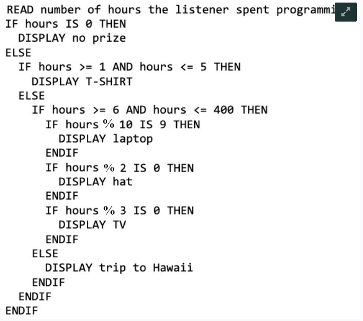
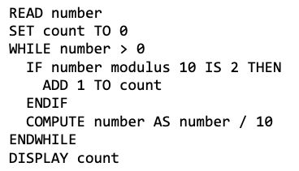

Q1 Train Ticket
15 PointsTrain Ticket for one person. Write a program that reads a person’s age, then computes and displays the price the person needs to pay for the train ride according to the following rules:
- Children younger than 6 years old ride for free.
- If the ticket is bought at the train station:
- A person over 70 years old pays $5.20
- Everyone else pays $11.50.
- If ticket is bought inside the train, there is an extra charge of 15% compared to train station prices.
Note that a person’s age is within the range of 0 to 120 years. Other inputs are considered error conditions.
Q1.1 Inputs, Outputs and Error Conditions
1.5 PointsIn the space below, determine the inputs, outputs and error conditions for the problem.
Q1.2 Algorithms
10 PointsIn the space below, write your algorithm using pseudocode (pseudocode reference sheet under Week 1 resources at https://introcs.cs.rutgers.edu/lectures). If you detect an error condition, end your program.
Q1.3 Test cases
3.5 PointsIn the space below, list a thorough set of test cases for your program. Write in the following format [inputs], where the inputs are separated by commas.
Ex. [ number/integer (age), boolean (in Train Station?)] [output (price)]
So, a 34 year old who bought a ticket at the station would look like this:
[34, TRUE] [11.50]
Q2 Bank
13 PointsA bank charges fees and/or gives interest based on the balance of a customer. Write a program that reads the customer balance, then calculates and displays the new balance after the application of fees and or interest based on the following rules:
• A negative balance incurs a $50 overdraft fee. • A balance below $500 (but positive or zero) incurs a $10 maintenance fee. • A balance from $500 to $1000 (inclusive) gains 1% interest. • A balance over $1000 will gain 2% interest.
Q2.1 Input, Output, Error Conditions
1.5 PointsIn the space below, determine the inputs, outputs, and error conditions for the problem.
Q2.2 Algorithm
9.5 PointsIn the space below, write your algorithm using pseudocode (pseudocode reference sheet under Week 1 resources at https://introcs.cs.rutgers.edu/lectures). If you detect an error condition, end your program.
Q2.3 Test cases
2 PointsIn the space bellow, list a thorough set of test cases for your program. Write in the following format [inputs], where the inputs are separated by commas. [inputs][output]
Q3 Count Operations - WCS111 FM
6 PointsWCS111 FM: a radio station by computer scientists for computer scientists. The station runs a contest where listeners win prizes based on how many hours they spend programming in Java. The following program displays the listener prize based on the number of hours spent programming.

Q3.1 Minimum
3 PointsWhat is the minimum number of operations that can be executed in the code? (Answer just in numbers)
Q3.2 Maximum
3 PointsWhat is the maximum number of operations that can be executed in the code? (answer just in numbers)
Q4 Count Operations - Lucky Twos
6 PointsLucky Twos determines and displays the number of digits that are 2s in a whole number. For example, the number of 2s in 3487 is 0, while the number of 2s in 272521 is 3. Note: whole numbers are non-negative integers starting at zero 0, 1, 2, 3, 4. Assume that the fractional part is discarded in the division: 10 / 4 = 2 8 / 5 = 1 20 / 3 = 6

Q4.1
6 PointsLet n be the number of digits of the whole number. What is the number of operations that are executed in the code in terms of n?